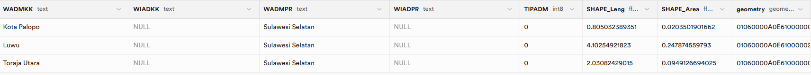
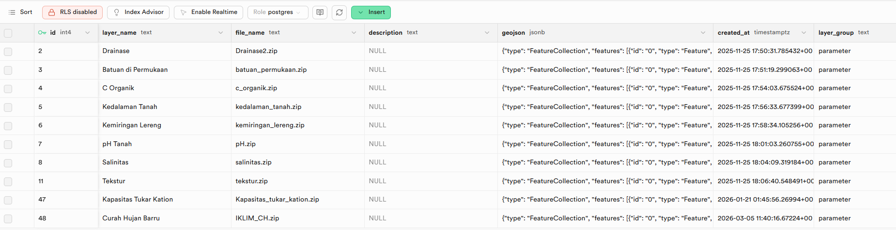

BASIS DATA GEOSPATIAL
PERTEMUAN 02
01 // RECAP_PREVIOUS
FOLIUM
Python wrapper for Leaflet.js. Visualisasi peta statis & dinamis dengan minimal coding.
BASEMAP
Layer dasar peta (OSM, Satellite, Stamen) yang menjadi pondasi layer spasial kita.
LEAFLET
Engine JavaScript di balik layar yang merender peta interaktif di browser web.
"Visualisasinya sudah oke, tapi datanya disimpan di mana?"
02 // KONSEP_HARI_INI
Data Spasial & GeoPandas
Shapefile (.shp)
Format standar industri ESRI. Terdiri dari minimal 3 file (.shp, .shx, .dbf) untuk menyimpan geometri & atribut.
GeoPandas
Extending Pandas dengan dukungan data spasial. Melakukan query SQL-like langsung pada koordinat.
GeoJSON
Format pertukaran data ringan berbasis JSON. Standar web modern untuk distribusi fitur geografis.
Data Lifecycle Architecture
03 // LIVE_CODING_TERMINAL
Implementasi Flask & GeoPandas
Environment Setup
Install dependensi utama untuk web mapping.
Reading Geospatial Data
Load Shapefile dan konversi Coordinate Reference System (CRS) ke WGS84.
Flask Routing
Membuat endpoint untuk mengirimkan peta ke frontend.
HTML Template Injection
Merender output HTML Folium menggunakan Jinja2 safe filter.
04 // MISSION_TASK
CHALLENGE: WebGIS Customizer
- check_circle Run aplikasi Flask lokal dan pastikan map muncul.
- check_circle Ganti source data dengan upload ZIP Shapefile baru.
-
check_circle
Modifikasi
style_functionuntuk mengganti warna polygon berdasarkan atribut.
Gunakan lambda x: {'fillColor': 'green'} untuk override default style di Folium GeoJson. Pastikan file SHP, DBF, dan SHX berada di folder yang sama.
MISSION_DEBRIEF
Summary Semua Pertemuan
Rekap singkat dari perjalanan materi yang sudah kita tempuh bersama.
Basis Data Geospasial
- check Pengenalan tipe data spasial (Titik, Garis, Poligon)
- check Format file peta: SHP, GeoJSON, KML
- check Sistem Koordinat & EPSG:4326 (WGS84)
WebGIS dengan Flask
- check GeoPandas membaca & memproses SHP secara lokal
- check Flask sebagai Web Server untuk peta interaktif
- check Folium merender GeoJSON menjadi peta Leaflet
Cloud Database: Supabase
- check SQLAlchemy menjembatani Python & PostgreSQL
- check
to_postgis()menerbangkan data ke Supabase otomatis - check
read_postgis()menarik data real-time dari cloud
GeoJSON Text Store
Kamu akan mempelajari cara menyimpan peta sebagai teks murni ke dalam kolom JSONB Supabase. Satu tabel menampung banyak layer peta sekaligus tanpa membuat tabel baru—murni menggunakan SQL INSERT!
Sudah selesai?
Kumpulkan laporan praktikum kamu sebelum sesi berakhir.
CLOUD_DATABASE (SUPABASE)
Menghubungkan WebGIS dengan Database Cloud secara real-time dan menyimpan data berskala besar dengan aman.
Install Library Pendukung
Sebelum mulai, kita butuh 3 pustaka tambahan. Jalankan perintah ini satu kali di Terminal:
- ►
psycopg2-binary— Driver koneksi Python ke PostgreSQL - ►
sqlalchemy— ORM pembuatan koneksi dan eksekusi SQL - ►
geoalchemy2— Ekstensi SQLAlchemy untuk tipe data PostGIS
HTTP Methods: GET vs POST
Setiap kali browser berkomunikasi dengan server, dia menggunakan sebuah "kata perintah" bernama HTTP Method.
Digunakan saat user membuka URL atau mengklik link. Data dikirim lewat URL.
Mengirim data baru ke server (file upload, form isian). Data tersembunyi, bukan di URL.
Mengganti seluruh data yang sudah ada. Ibarat "overwrite" total sebuah baris di tabel.
Mirip PUT tapi hanya mengubah sebagian kolom saja, bukan keseluruhan data.
Memerintahkan server untuk menghapus data tertentu. Harus digunakan dengan hati-hati!
Menerima File Upload di Server
Flask menangkap file yang diunggah melalui objek request.files:
Koneksi ke Database Supabase
SQLAlchemy butuh sebuah Connection String untuk mengenali server tujuan. Formatnya:
Kirim Peta ke Cloud: to_postgis()
Satu baris ini membuat tabel baru di Supabase secara otomatis beserta seluruh kolom atribut dan geometrinya:
if_exists="append" untuk menambahkan baris baru tanpa menghapus data lama.
Tampilan Tabel: Geometry vs GeoJSON
Begini perbedaan tampilan tabel di Supabase antara pendekatan to_postgis() (kolom geometry) vs pendekatan GeoJSON Text (kolom jsonb):

-- Aktifkan PostGIS (Hanya sekali) CREATE EXTENSION IF NOT EXISTS postgis; CREATE TABLE data_spasial ( id SERIAL PRIMARY KEY, geom GEOMETRY(Geometry, 4326) -- Binary format );
Kolom geometry menyimpan data dalam format binary PostGIS. Bisa langsung dibaca oleh read_postgis() tapi tidak bisa dibaca manusia secara langsung.

-- Pendekatan Challenge P3 CREATE TABLE koleksi_peta ( id SERIAL PRIMARY KEY, nama_layer TEXT, geojson JSONB -- Format teks GeoJSON );
Kolom geojson bertipe JSONB menyimpan teks GeoJSON yang bisa dibaca manusia. Satu tabel bisa menampung banyak layer peta sekaligus — inilah target Challenge P3!
Tarik Peta dari Cloud: read_postgis()
Kebalikannya. Menarik data dari Supabase dan mengembalikannya sebagai GeoDataFrame siap render Folium:
06 // MISSION_TASK
CHALLENGE: GeoJSON Text Store
-
check_circle
Buat tabel koleksi_peta manual di Supabase dengan tipe data
JSONBatauTEXT. -
check_circle
Konversi GeoDataFrame ke format teks standar menggunakan
gdf.to_json(). - check_circle Simpan string GeoJSON ke kolom database dengan perintah SQL INSERT murni secara terprogram (SQLAlchemy).
Untuk mengeksekusi script SQL mentah di SQLAlchemy, Anda dapat menggunakan fungsi connection.execute(text("INSERT INTO ...")). Jangan lupa panggil connection.commit() secara spesifik!